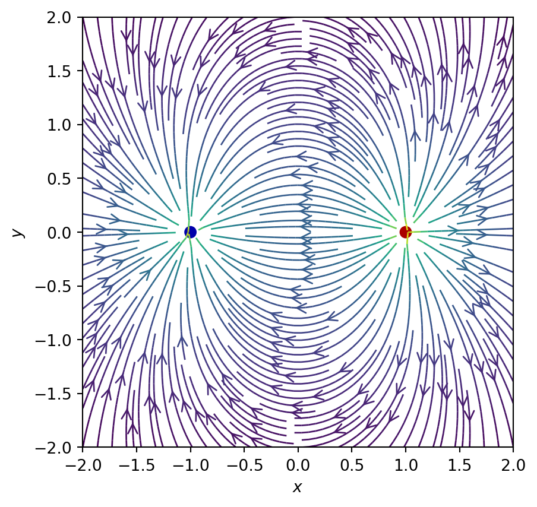
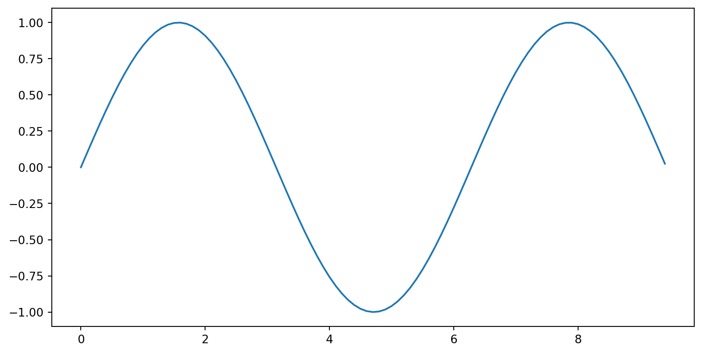
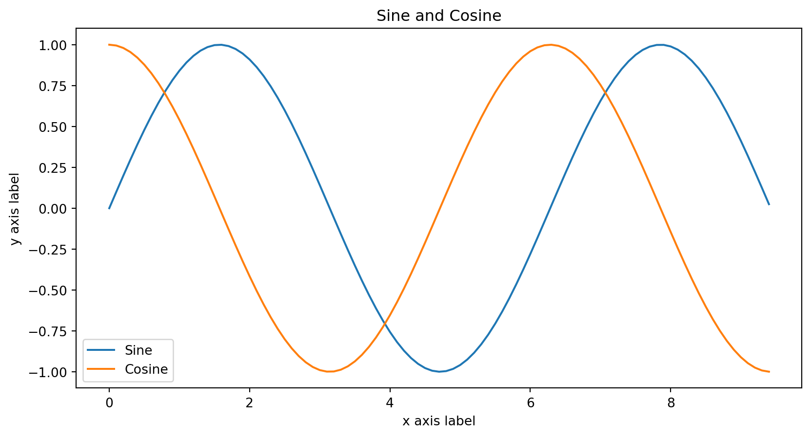
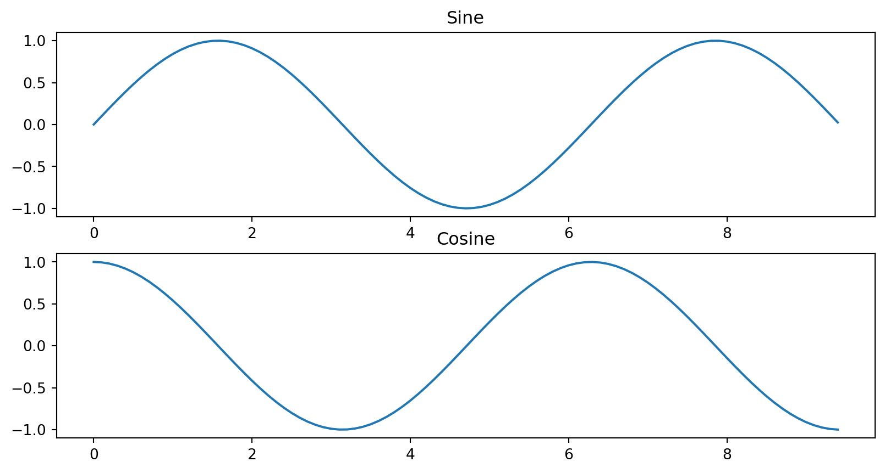
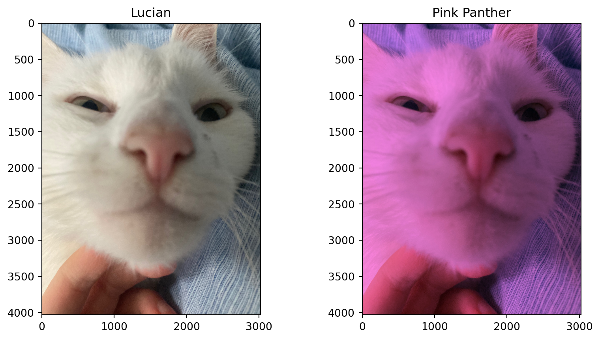

NumPy and friends
NumPy package is the key building block of the Python scientific ecosystem.
Assume that what you want to achieve can be achieved in a highly optimised way within the existing framework
Only resort to your own solution if this is not the case
Many resources for learning NumPy online (see links in notes)
Preamble: objects in Python
Everything in Python is an object
For example
[1,2,3]is alist:
Object is container for properties and methods (functions associated with object), accessed with
.syntax.e.g. lists have
appendmethod:
- In IPython you can see all the available methods by hitting tab:

- List all of an objects properties and methods using
dir:
['__add__', '__class__', '__class_getitem__', '__contains__', '__delattr__', '__delitem__', '__dir__', '__doc__', '__eq__', '__format__', '__ge__', '__getattribute__', '__getitem__', '__getstate__', '__gt__', '__hash__', '__iadd__', '__imul__', '__init__', '__init_subclass__', '__iter__', '__le__', '__len__', '__lt__', '__mul__', '__ne__', '__new__', '__reduce__', '__reduce_ex__', '__repr__', '__reversed__', '__rmul__', '__setattr__', '__setitem__', '__sizeof__', '__str__', '__subclasshook__', 'append', 'clear', 'copy', 'count', 'extend', 'index', 'insert', 'pop', 'remove', 'reverse', 'sort']- Many are dunder methods (or magic methods, or just special methods), to be used by Python interpreter to implement certain standard functions
- e.g.
len(my_list)is actually callingmy_list.__len__which does job of actually finding length.
- Example of polymorphism in object oriented programming
Arrays
Fundamental object in NumPy is Array (or
ndarray), multidimensional version of alistIn plain old Python a matrix would be a list of lists.
data[i]represents each row:
- To multiply every element by a number I would do something like this:
[[2, 4, 6], [8, 10, 12], [14, 16, 18], [20, 22, 24]]- Don’t do this
- NumPy is made for tasks like this with minimum code and maximum efficiency
First create data as array
Numerous NumPy functions produce arrays
Simplest is numpy.array: takes data in “Pythonic” list-of-lists(-of-lists-of… etc.) form and produces
ndarray
- Multiply array by number? Easy!
- It even prints nicely
Indexing
- Arrays can be indexed, similar to lists
- Better syntax for the last one
- Also have a generalization of the slice syntax
- Slicing can be mixed with integer indexing
NumPy has all sorts of fancy indexing options
Indexing with integer arrays, with boolean arrays, etc.
See the documentation
Shape
- A fundamental property of an array is
shape:
First a number of
[corresponding to the rank of the array (two in the above example)Then number of entries giving rightmost (innermost) dimension in shape before closing
](3 here)After a number of 1D arrays
[...]equal to the next innermost dimension (4 here), we have another closing], and so on
- Slicing does not change the array rank
- Integer indexing does
- Note:
(3,)is tuple giving the shape while(3)is just the number 3 in brackets
Lots of methods to create arrays
a = np.zeros((2,2))
print(a)
b = np.ones((2,2))
print(b)
c = np.full((2,2), 5)
print(c)
d = np.random.random((2,2)) # random numbers uniformly in [0.0, 1.0)
print(d)
eye = np.eye(2) # Identity matrix
print(eye)[[0. 0.]
[0. 0.]]
[[1. 1.]
[1. 1.]]
[[5 5]
[5 5]]
[[0.22037473 0.16833116]
[0.43418216 0.72637736]]
[[1. 0.]
[0. 1.]]Shape shifting
numpy.reshape to change the shape of an array
numpy.expand_dims to insert new axes of length one.
numpy.squeeze (the opposite) to remove new axes of length one.
- Example of
reshape
Only works if the shapes are compatible. Here it’s OK because the original shape was \((4,3)\) and \(4\times 3 = 2\times 2\times 3\)
If shapes aren’t compatible, we’ll get an error
dtype
Arrays have
dtypeproperty that gives datatypeIf array was created from data, this will be inferred
- Functions constructing arrays have optional
dtype
- Importantly, complex numbers are supported
Examples of array-like data
Position, velocity, or acceleration of particle will be three dimensional vectors, so have shape
(3,)With \(N\) particles could use a \(3N\) dimensional vector
Better: an array of shape
(N,3). First index indexes particle number and second particle coordinate.\(N\times M\) matrix has shape
(N,M)Riemann curvature tensor in General Relativity \(R_{abcd}\) has shape
(4,4,4,4)
Fields are functions of space and time e.g. the electric potential \(\phi(\mathbf{r},t)\)
Approximate these using a grid of space-time points \(N_x\times N_y \times N_z\times N_t\)
Scalar field can be stored in an array of shape
(N_x,N_y,N_z,N_t)A vector field like \(\mathbf{E}(\mathbf{r},t)\) would be
(N_x,N_y,N_z,N_t,3)
- Very useful method to create a grid of coordinate values
# Grid of x, y points
nx, ny = 64, 64
x = np.linspace(-2, 2, nx)
y = np.linspace(-2, 2, ny)
X, Y = np.meshgrid(x, y)
X.shape(64, 64)
Mathematical operations with arrays
- On lists
- In numerical applications what we really want is
- General feature of NumPy: all mathematical operations are performed elementwise on arrays!
print(np.array([1, 2, 3]) + np.array([4, 5, 6]))
print(np.array([1, 2, 3])**2)
print(np.sqrt(np.array([1, 2, 3])))[5 7 9]
[1 4 9]
[1. 1.41421356 1.73205081]Avoids need to write nested loops
Loops are still there, but written in C
This style of code is often described as vectorized
In NumPy-speak vectorized functions are called ufuncs
As a basic principle never use a Python loop to access your data in NumPy code
Broadcasting…
- …is a powerful protocol for combining arrays of different shapes, generalizing this kind of thing
- Elementwise operations performed on two arrays of same rank if in each index sizes either match or one array has size 1
array([[5, 5, 5],
[8, 8, 8]])- We can simplify this last example
Recall example of an \(N\)-particle system described by a position array of shape
(N,3)If we want to shift the entire system by a vector, just add a vector of shape
(3,)and broadcasting will ensure that this applied correctly to each particle.
Broadcasting two arrays follows these rules:
- If arrays do not have same rank, prepend shape of lower rank array with 1s until both shapes have same length
- Two arrays are said to be compatible in a dimension if they have same size in that dimension, or if one of the arrays has size 1 in that dimension
- Arrays can be broadcast together if they are compatible in all dimensions. After broadcasting, each array behaves as if it had shape equal to the elementwise maximum of shapes of the two input arrays
- In any dimension where one array had size 1 and the other array had size greater than 1, the first array behaves as if it were copied along that dimension
The documentation has more detail
Broadcasting takes some time to get used to but is immensely powerful!
Plotting with Matplotlib
Various specialized Python plotting libraries
“entry-level” option is Matplotlib
pyplotmodule provides a plotting system that is similar to MATLAB (I’m told)
- Probably the second most common import you will make!
- Here’s a simple example of
plotfunction
# Compute the x and y coordinates for points on a sine curve
x = np.arange(0, 3 * np.pi, 0.1)
y = np.sin(x)
# Plot the points using matplotlib
plt.plot(x, y)
plt.show()
- Note: you must call plt.show() to make graphics appear
- Fancier example with some labelling
# Compute the x and y coordinates for points on sine and cosine curves
x = np.arange(0, 3 * np.pi, 0.1)
y_sin = np.sin(x)
y_cos = np.cos(x)
# Plot the points using matplotlib
plt.plot(x, y_sin)
plt.plot(x, y_cos)
plt.xlabel('x axis label')
plt.ylabel('y axis label')
plt.title('Sine and Cosine')
plt.legend(['Sine', 'Cosine'])
plt.show()
- Often you’ll want to make several related plots and present them together
import matplotlib.pyplot as plt
# Compute the x and y coordinates for points on sine and cosine curves
x = np.arange(0, 3 * np.pi, 0.1)
y_sin = np.sin(x)
y_cos = np.cos(x)
# Set up a subplot grid that has height 2 and width 1,
# and set the first such subplot as active.
plt.subplot(2, 1, 1)
# Make the first plot
plt.plot(x, y_sin)
plt.title('Sine')
# Set the second subplot as active, and make the second plot.
plt.subplot(2, 1, 2)
plt.plot(x, y_cos)
plt.title('Cosine')
# Show the figure.
plt.show()
Example: playing with images
Pixels in an image encoded as a triple of RGB values in the range [0,255] i.e. 8 bits of type
uint8(the “u” is for “unsigned”)Tinting an image gives a nice example of broadcasting
img = plt.imread('../assets/lucian.jpeg')
img_tinted = img * [1, 0.55, 1]
# Show the original image
plt.subplot(1, 2, 1)
plt.imshow(img)
plt.title("Lucian")
# Show the tinted image
plt.subplot(1, 2, 2)
plt.title("Pink Panther")
# Having multiplied by floats,
# we must cast the image to uint8 before displaying it.
plt.imshow(np.uint8(img_tinted))
plt.show()
img.shape, img.dtype
This is a standard 12 megapixel image
Saving and loading data
- A related function savez allows several arrays to be saved and then loaded as a dictionary-like object.
random_matrix_1 = np.random.rand(4, 4)
random_matrix_2 = np.random.rand(4, 4)
np.savez("../assets/my-matrices", first_matrix=random_matrix_1, second_matrix=random_matrix_2)
%ls ../assetsFFT-butterfly.png
Hidden-Figures-scene_Katherine-Johnson-calculates-orbital-insertion-trajectories_Credit_TM-and-C-2017-Twentieth-Century-Fox-Film-Corporation_All-rights-reserved.webp
Random_walk_25000.svg
contractions.png
dog-or-food.png
feedback-qr.png
fibonacci.png
gaussian-barrier.mp4
h-chain.png
hard-spheres.png
ia-question.png
ising.js
ising.py
ligo-residuals.png
ligo-stages.png
ligo-window.png
loss-landscape.png
lucian.jpeg
metropolis.png
my-matrices.npz
nielsen-nn.png
nielsen-single-neuron.png
overfitting.png
page.jpeg
simulation.jpg
tab-complete-slow.gif
tab-complete.gif
tab-complete.png
tensor-pics.png